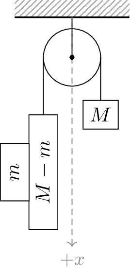

pre.tex
\documentclass[tikz]{standalone}\input{pre.tex}\begin{document}\begin{tikzpicture}
\draw[interface] (-1,0.7) rectangle (1,1);
\draw[thick] (-1,0.7) -- (1,0.7);
\draw (0,0.7) -- (0,0);
\draw[axis,->] (0,0.7) -- ++(0,-4) node[below] {$+x$};
\draw (0,0) circle (0.5);
\draw[fill=black] (0,0) circle (1pt);
\draw (-0.5,0) -- ++ (0,-1);
\draw (0.5,0) -- ++ (0,-1);
\draw[fill=white] (0.5,0) ++ (0,-1) node[draw,minimum width=0.5cm,minimum height=0.5cm, fill=white] {$M$};
\draw[fill=white] (-0.5,0) ++ (0,-2) node[draw,minimum width=2cm,minimum height=0.5cm, fill=white, rotate=90] {$M-m$};
\draw[fill=white] (-0.5,0) ++ (-0.5,-2) node[draw,minimum width=1cm,minimum height=0.5cm, fill=white, rotate=90] {$m$};
\end{tikzpicture}\end{document}